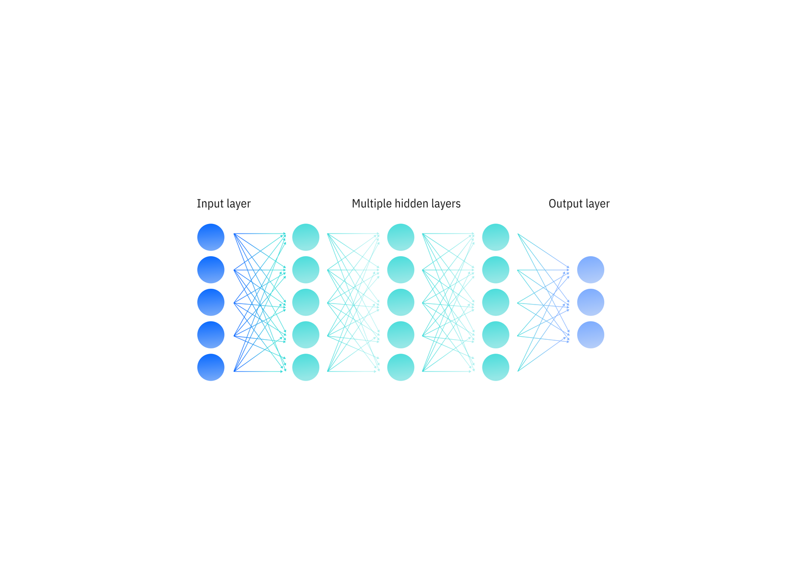

O deep learning é um subconjunto do aprendizado de máquina orientado por redes neurais de várias camadas cujo design é inspirado na estrutura do cérebro humano. Modelos de deep learning servem de base para a maioria das inteligências artificial (IA) de última geração atualmente, desde computer vision e IA generativa até carros autônomos e robótica.
Ao contrário da lógica matemática explicitamente definida dos algoritmos de aprendizado de máquina tradicionais, as redes neurais artificiais dos modelos de deep learning abrangem muitas camadas interconectadas de "neurônios", onde cada uma realiza uma operação matemática. Ao usar o aprendizado de máquina para ajustar a força das conexões entre neurônios individuais em camadas adjacentes, em outras palavras, os pesos e vieses variáveis do modelo, a rede pode ser otimizada para produzir resultados mais precisos. Embora as redes neurais e o deep learning tenham se tornado inextricavelmente associados umas às outras, elas não são estritamente sinônimos: "deep learning" refere-se ao treinamento de modelos com pelo menos quatro camadas (embora as arquiteturas de redes neurais modernas sejam frequentemente muito "mais profundas" do que isso) .
É essa estrutura distribuída, altamente flexível e ajustável que explica o incrível poder e a versatilidade do deep learning. Imagine dados de treinamento como pontos de dados espalhados em um gráfico bidimensional e o objetivo do treinamento de modelo é encontrar uma linha que passe por cada um desses pontos de dados. Essencialmente, o aprendizado de máquina tradicional visa realizar isso usando uma única função matemática que produz uma única linha (ou curva); O deep learning, por outro lado, pode reunir um número arbitrário de linhas menores e individualmente ajustáveis para formar a forma desejada. Redes neurais são aproximadores universais: foi provado teoricamente que, para qualquer função, existe um arranjo de redes neurais que pode reproduzi-la.1
Como funciona o deep learning
As redes neurais artificiais são, em termos gerais, inspiradas no funcionamento dos circuitos neurais do cérebro humano, cujo funcionamento é impulsionado pela complexa transmissão de sinais químicos e elétricos através de redes distribuídas de células nervosas (neurônios). No deep learning, os "sinais" análogos são as saídas ponderadas de muitas operações matemáticas aninhadas, cada uma realizada por um "neurônio" artificial (ou nó), que compõem coletivamente a rede neural.
Em resumo, um modelo de deep learning pode ser entendido como uma série intrincada de equações aninhadas que mapeiam uma entrada para uma saída. Ajustar a influência relativa de equações individuais dentro dessa rede usando processos especializados de aprendizado de máquina pode, por sua vez, alterar a maneira como a rede mapeia entradas para saídas.
Embora esse framework seja muito poderoso e versátil, ele prejudica a interpretabilidade. Frequentemente, há pouca ou nenhuma explicação intuitiva, além de uma explicação matemática bruta, sobre como os valores de parâmetros de modelos individuais aprendidos por uma rede neural refletem as características do mundo real. Por esse motivo, os modelos de deep learning são frequentemente chamados de “caixas-pretas”, especialmente quando comparados aos tipos tradicionais de modelos de aprendizado de máquina informados pela engenharia de funcionalidades manual.
Estrutura de redes neurais profundas
As redes neurais artificiais compreendem camadas interconectadas de "neurônios" artificiais" (ou nós), cada um dos quais realiza sua própria operação matemática (chamada de "função de ativação"). Existem muitas funções de ativação diferentes; uma rede neural geralmente incorpora múltiplas funções de ativação dentro de sua estrutura, mas normalmente todos os neurônios em uma determinada camada da rede neural serão configurados para executar a mesma função de ativação. Na maioria das neural networks, cada neurônio da camada de entrada é conectado a cada um dos neurônios da camada seguinte, que estão conectados aos neurônios da camada seguinte, e assim por diante.
A saída da ativação de cada nó contribui com parte da entrada fornecida para cada um dos nós da camada seguinte. Crucialmente, as funções de ativação realizadas em cada nó são não lineares, permitindo às redes neurais modelar padrões e dependências complexos. É o uso de funções de ativação não lineares que distingue uma rede neural profunda de um modelo de regressão linear (muito complexo).
Embora algumas arquiteturas especializadas de redes neurais, como combinações de modelos especializados ou redes neurais convolucionais, impliquem variações, adições ou exceções a esse arranjo, todas as redes neurais empregam alguma versão dessa estrutura central. O número específico de camadas, o número de nós dentro de cada camada e as funções de ativação escolhidas para os nós de cada camada são hiperparâmetros a serem determinados manualmente antes do treinamento.

Rede neural feedforward padrão com três camadas ocultas.